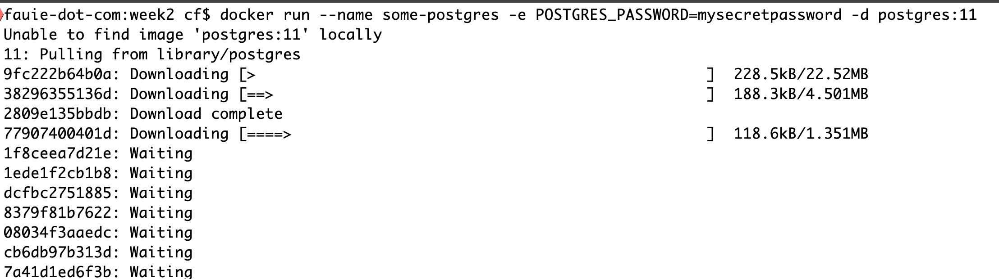

# INFO 610 Fall 2019 <div style="text-align:center;font-size: 1.5;line-height:1.8em;">Week 1.5</div> --- --- # History of Databases <ul> <li> Hierarchical Database - Inverted tree - Parent Child</li> <li> Network Database - Nodes and Set Structures - Collection of Records and Relationships </li> </ul> --- # Relational Database 1969 - Dr. Edgar F. Codd - IBM <br/> <br/> A relational database stores data in relations, which the user pereives as tables.<br/> Each relation/table is composed of records and attributes. <br/> <i>tuples, fields</i> <br/> Two characteristics of the database allow the data to exist independently of the way it is represented: <ul> <li> Physical order of storage is immaterial</li> <li>Each record in a table is recognized by a field unique value</li> </ul> --- # Example of Tables Page 14 - Agents, Clients<br/> Page 14 - Entertainers, Engagements<br/> <br/> <br/> <strong>Discussion</strong><br/><br/> <i>How would we model information about a school program, like VCU's IS program?</i> --- # Relationships of Relations Relational model categorizes relationships as <br/> * One to One <br/> * One to Many <br/> * many-to-many - future class --- # Retrieving Data | ClientID | AgentID | ClientFirstName | ClientLastName| ClientPhoneNumber | |---|---|---|---|---| | 1 | 100 | Mickey | Mouse | 888-555-1212 | | 2 | 101 | Isaac | Newton | 804-555-1212 | | 3 | 102 | Magic | Johnson | 800-555-1212 | * Retrieving Data <strong>Find clients with lastname 'Mouse'</strong><br/> <i>select * from clients where ClientLastName = "Mouse"</i><br/><br/> <strong>Find clients with Agent 102</strong><br/> <i>select * from clients where AgentID = 102</i><br/><br/> <strong>Get specific fields</strong><br/> <i>select ClientFirstName, ClientLastName, ClientPhoneNumber from agents </i><br/><br/> --- # Advantages of Relational Databases <ul> <li>Built in Multi Level Integrity</li> <li>Logical and Physical Data Independance from Applications</li> <li>Guaranteed Data Consistency and Accuracy</li> <li>Easy* data retrieval</li> </ul> --- # Relational Database Management Systems A <i>relational database management system (RDBMS)</i> is a software application program you ues to create, maintain, modify and manipulate a relational database<br/> <ul> <li>Oracle</li> <li>Microsoft SQL Server</li> <li>Microsoft Access</li> <li>MySQL/MariaDB</li> <li>Postgresql</li> <li>Amazon RDS</li> </ul> --- # Docker On your laptops, please install Docker:<br/> https://docs.docker.com/install/<br/> This will be successful when you can run the following on your command line: ```bash docker run hello-world ``` THEN Attempt this: ```bash $ docker run --name some-postgres -e POSTGRES_PASSWORD=mysecretpassword -d postgres:11 ```  --- # Next Week * Database Design * Methodology * ER Diagrams * Terminology * Relationships ---